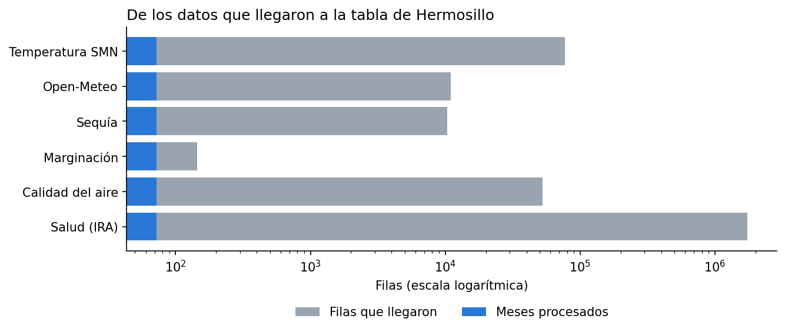

SONORA HEALTH-CLIMATE EDA
PREGUNTA GENERAL
¿Cómo inciden el calor, el frío, la sequía y la calidad del aire en las enfermedades respiratorias en Hermosillo?
PREGUNTA ESPECÍFICA
¿Las zonas más marginadas de Hermosillo son las más afectadas por esas condiciones ambientales?
LAS FUENTES
| Fuente | Qué trae | Origen | Formato nativo | Filas |
|---|---|---|---|---|
| Temperatura SMN | Temperatura mensual por estación | CONAGUA / SMN | 216 CSV | 77,027 |
| Open-Meteo | Temperatura y humedad diarias | Open-Meteo | JSON (API) | 10,958 |
| Sequía | Sequía por municipio y quincena | CONAGUA / SMN | Excel (XLSX) | 10,368 |
| Marginación | Índice por municipio, 2015 y 2020 | CONAPO | 2 Excel | 144 |
| Calidad del aire | PM2.5, PM10 y ozono cada hora | RUOA-UNAM, ERNO | 72 CSV | 52,608 |
| Salud (IRA) | Casos por semana y unidad médica | Secretaría de Salud | CSV (manual) | 1,732,444 |
| Catálogo CLUES | Ubicación de las unidades médicas | Secretaría de Salud | Excel (XLSX) | 103 |
CÓMO VALIDAMOS
Define cómo debe verse una fila: columnas, tipos y rangos permitidos.
validate_dataframe pasa la tabla por el esquema, fila por fila.
Filas válidas y una lista de errores con el campo y el motivo.
Ejemplo de reglas: la humedad debe estar entre 0 y 100 %; la semana epidemiológica, entre 1 y 53; las coordenadas de una clínica, dentro de Sonora.
RESULTADO
Filas válidas
Filas rechazadas
1.8 M filas revisadas · 72 de 72 meses en cada tabla procesada
DE LA INGESTA A HERMOSILLO

HALLAZGO
86
unidades válidas
13
ubicadas en la Ciudad de México, aunque el catálogo dice Hermosillo
4
sin coordenadas en el catálogo
Son consultorios de farmacias: sin la validación, habrían entrado al mapa sin notarlo.
CONCLUSIÓN
6 de 7
fuentes pasan su esquema pydantic al 100 %
72/72
meses de 2015–2020 en cada tabla procesada
17
unidades del catálogo CLUES sin coordenadas útiles